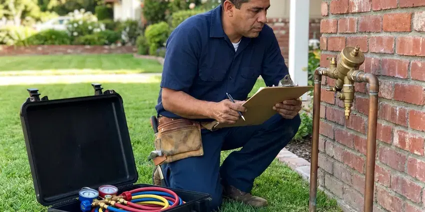

Plumbers Near Me in Dayton, OH
Homeowners in Dayton, OH call HRL Plumbing for the everyday stuff and the late-night disasters. Licensed plumbers either way.
- Workmanship Warranty
- Local Ohio Plumbing Crew
- Real Arrival Windows
- Floors Covered on Every Job
Water Where It Should Not Be in Dayton, OH?
After hours, we still pick up. Burst pipes do not keep business hours.
Licensed Plumbers for Dayton, OH Homes
Our plumbers in Dayton, OH start every call by finding the actual cause. Not every leak is where it looks. A wet ceiling might be a shower valve, a toilet seal or a pipe in the next room, and we trace it before quoting. Then you get a written price.
Some of what we do:
- Repiping with copper or PEX
- Water heater service and installs
- Leak detection on copper, PEX and galvanized

Additional Plumbing Maintenance Services in Dayton, OH
Our maintenance and specialty plumbing services in Dayton, OH catch small problems before they become emergencies.


Customers
Why Choose HRL Plumbing for Plumbers Near Me in Dayton, OH?
Our plumbers live and work around Dayton. They work the same streets you drive. That means they know the housing stock, the inspectors and the older blocks where pipe trouble starts, and they come back if something we did needs another look.
- Fast Response, Emergency calls move to the front of the line to limit water damage.
- Stocked Trucks, Common parts are on board, so most repairs finish in one visit.
- On-Time Arrival, You get a real arrival window and a heads-up call.
Citywide Coverage
No matter where you are in Dayton, we can usually fit you in today. Saturdays included. We route trucks by area, so drive time stays short.
Experienced Team
Each plumber gets ongoing training on new fixtures, tankless heaters and leak detection tools. Products change fast. That keeps their skills current with what is going into Ohio homes, which means newer equipment gets serviced right.
Safety-First Approach
Water heaters are installed with the safety parts the code calls for. Nothing gets skipped. That means a properly sized relief valve with a discharge pipe, an expansion tank where required, correct venting and strapping where the local code calls for it.
Trusted Certified Dayton Plumbing Services Professionals
At HRL Plumbing, we take pride in licensed, certified plumbing services throughout Dayton, OH. Credentials matter in this trade. Every repair, install and maintenance visit follows strict safety and quality rules, and the plumbers doing the work carry recognized industry credentials.
Call Us Now PHCC Plumbing Contractor Recognition
PHCC Plumbing Contractor Recognition Better Business Bureau (BBB) Accreditation
Better Business Bureau (BBB) Accreditation Angi Certified Pro
Angi Certified Pro ISO 9001 Quality Management Certification
ISO 9001 Quality Management CertificationPlumbing Work We Do Every Week in Dayton, OH
Slab Leak Detection & Repair in Dayton, OH
Tree roots and shifting clay often crack older clay or cast iron sewer laterals, leading to slow drains and backups. A slab leak is a supply pipe leaking under the concrete floor. A warm floor tile is a giveaway. We find it with acoustic gear and a thermal camera, then you choose between opening the slab at that spot, rerouting the line through the walls or attic, or abandoning the old pipe and repiping overhead. Each has its tradeoffs.

Drain Cleaning and Sewer Service in Dayton, OH
Slow sinks, tubs and toilets are some of our most common calls. Most clear quickly. We use cables and jetters sized to the pipe, test the flow and scope the main on whole-house backups. We tell you what caused it.
Leak Detection and Pipe Repair in Dayton
Pinhole leaks in older copper lines are common. They start small. We find hidden leaks with acoustic gear, a thermal camera and pressure tests, then repair the section. We cut only what we need.
Emergency Plumbing Repairs in Dayton, OH
Overflowing toilets and burst pipes cannot wait until Monday. Neither can a gas smell. Our emergency plumbers respond fast, shut things off and fix them with parts from the truck. You get the rate up front.
Commercial Plumbing Service in Dayton, OH
Offices, salons and retail spaces need restrooms that work every day. Customers notice right away. We handle commercial water heaters, grease traps, backflow testing, restroom fixtures and drain lines, and a preventive maintenance plan cuts down on surprise repairs and closures. We can work before or after hours.
Leak Detection & Repair in Dayton
Hidden leaks show up as stains, swollen baseboards or a bill that keeps climbing. Mold follows fast. We use acoustic listening gear, a thermal camera and pressure tests to narrow it down in your Dayton home. Then we fix it. Small openings get patched afterward.
Emergency Plumbing Services in Dayton
A burst supply line can put several gallons a minute on the floor. Shut the main first. HRL Plumbing answers emergency calls around the clock in Dayton, and the plumber who shows up carries the fittings, valves and pipe to make a permanent repair rather than a temporary patch. Speed limits the damage.

Toilet Repair & Installation in Dayton, OH
A running toilet can waste hundreds of gallons a day. The flapper is the usual suspect. We replace flappers, fill valves and wax rings, or install a new low-flow toilet when the old one is past saving in Dayton, OH. It is usually a short visit.
Plumbers in Every Dayton, OH Neighborhood
People in Dayton call us for the same handful of things: leaks, clogs, water heaters, running toilets. It is routine work. Because we know what to expect, the parts for those jobs are already on board.
Local plumbers know the permit office and the inspectors. That helps on bigger jobs. Water heater swaps, gas lines and repipes often need permits, and we handle them in Dayton.
HRL Plumbing at a Glance
- Licensed and insured plumbers serving Dayton, OH
- Same-day appointments and 24/7 emergency response
- Clear written estimates, no hidden fees
- 4.9-star rated by 673+ Ohio customers
Dayton Map
Dayton Information
- Population
- 135,512
- Area codes
- 937/326/513
- Service area
- Dayton and towns within a 40 mile drive
- Nearby
- Kettering, Middletown, Springfield, Hamilton
Summer humidity causes condensation on cold pipes and toilets, which can damage basement ceilings and floors. That kind of stress shortens the life of pipes and water heaters, so having a plumber nearby in Dayton, OH keeps small problems small.
Expert Services
Reach out to HRL Plumbing for honest, reliable plumbing from people who know the trade in Dayton, OH.
Our Specialized Plumbing Services in Dayton, OH
At HRL Plumbing, we handle the full list of plumbing services across Dayton, OH. We go from leak detection all the way to full system installations, for homes and commercial buildings, and we do it quickly at a fair price. Take a look at our core services below:


What Happens When Our Plumber Arrives in Dayton, OH
Most repairs finish in one visit. Here is how that visit goes.
Book a Visit
Call (740) 449-7505 to describe the problem. Same-day slots are usually open.
On-Site Look
A HRL Plumbing plumber arrives on time at your Dayton property and tracks down the cause.
Clear Pricing
You get an upfront estimate for the work. Approve it and we start.
Frequently Asked Questions About Plumbers Near Me in Dayton
It depends a lot on the job. Simple fixes cost the least. A basic repair like a dripping faucet in Dayton might run $150 to $300, and larger jobs like a water heater or a slab leak can top $800. We price it after we diagnose it.
Private wells serve many rural homes, and iron, sulfur and hardness are frequent issues that call for filtration or softening. Scale builds on faucets, showerheads and inside water heaters and pipes. Flow drops over time. It also shortens the life of cartridges, appliances and water heater elements. A water softener helps protect all of it.
Usually within a few hours. Often faster than that. Emergency calls in Dayton move to the front of the line, with a stocked truck that can usually finish the job. Shut off the main while you wait if water is spraying.
Tree roots and shifting clay often break into older clay or cast iron sewer laterals, leading to slow drains and backups. Private wells serve many rural homes, and iron, sulfur and hardness are frequent issues that call for filtration or softening. Older homes in Dayton also tend to have aging galvanized pipe, stuck shutoff valves and roots in the sewer line.
Rheem, Bradford White, AO Smith, Navien and Rinnai. We can source others too. We help you choose the right size and fuel type, based on how many people live in the house, how many bathrooms you have and whether gas or electric is already in place. Tankless and high-efficiency options are available.
Check the water meter with everything off. If it moves, something leaks. Other signs are a bill that keeps climbing, damp walls, puddles, a musty smell or running water sounds. The sooner it is found, the less damage it does.
A backflow preventer keeps dirty water from flowing back into the drinking supply. It only lets water go one direction. Local codes in Dayton require them on commercial buildings and on many irrigation systems, and most water providers want them tested every year by a certified tester who files the results. We install, test and repair them.
Most of them. We work with all the majors. For water heaters that means Rheem, AO Smith, Bradford White and Navien tankless, and for fixtures we install and repair Moen, Delta, Kohler and American Standard, which keeps replacement parts easy to find in Dayton. We help you pick.
Hear From Customers Who Hired Our Plumbing Experts

Greg S.
I manage a small strip center with six tenants. HRL Plumbing handles our annual backflow testing and fixed a recurring clog in the shared sewer line that had been backing into the nail salon. Their reports come in clean and on time.
Commercial Plumbing · Middletown, OH
Angela D.
Our sump pump quit during a storm and the water was an inch from the basement carpet. HRL Plumbing put in a new pump with a battery backup that same evening. We have had two heavy rains since. It kicked on both times.
Sump Pump · Dublin, OHMark T.
The floor drain in our office break room backed up every few weeks. The plumber ran a cable, then put a camera down and found roots at a joint about thirty feet out. Seeing it on the screen made the decision easy.
Drain Cleaning · Kettering, OH
James P.
Our restaurant had a slow leak at the hand sink that was rotting the cabinet base. HRL Plumbing came in at six in the morning before prep, replaced the trap and both supply lines, and was packed up before my first cook clocked in.
Commercial Plumbing · Cincinnati, OH
Daniel K.
A pipe burst in the garage ceiling at 11 at night. Someone answered on the second ring, and the plumber was in my driveway about fifty minutes later. He shut off the main, cut out the split section, and had water back on before 2 am.
Emergency Plumbing · Kettering, OH
Lisa C.
Water was pouring out from under the washing machine on a holiday weekend. HRL Plumbing talked me through closing the valves over the phone and had a plumber at the house within ninety minutes. It was a burst fill hose.
Emergency Plumbing · Cincinnati, OH